▲ 당항포관광지 이순신 테마 구역의 전각 건물. 촬영 시기는 자료에 없다 ⓒ 한국관광공사 · 공공누리 제1유형
"당항포관광지, 공룡공원이라고만 알았는데 이순신 장군 승전지라고? 그럼 겨울에도 열고 입장료는 얼마지?" 이 글은 2026년 10월 21일 기준으로 고성문화관광재단의 당항포관광지 운영 안내와 한국관광공사 자료를 바탕으로, 경남 고성 당항포가 어떤 곳인지와 입장료·운영시간·주차·겨울 운영을 정리했다. 강원도 고성(화진포·통일전망대)이 아니라 경상남도 고성군 회화면에 있는 곳이다. 운영시간·요금 공식 안내 바로가기
당항포는 임진왜란 때 이순신 장군이 이끈 수군이 승리한 바다로 이름난 자리이고, 지금은 공룡 전시와 이순신 전시가 한 관광지 안에 함께 있다. 마침 지금(2026-10-21)은 공룡엑스포가 열리는 기간이라 평소와 운영 조건이 다를 수 있어, 이 점도 따로 짚었다.
💡 먼저 결론
당항포관광지는 이순신 테마와 공룡 테마 두 구역으로 나뉜 경남 고성의 관광지다. 고성문화관광재단 안내상 월요일 휴무, 운영 09:00~18:00(동절기 12~2월은 09:00~17:00), 개인 입장료는 어른 7,000원, 승용차 주차료는 3,000원이다. 공룡엑스포 기간(2026-09-22 개막, 41일간)에는 입장권 체계와 주차 조건이 따로 안내되므로 방문 전 공식 공지를 확인해야 한다.
1. 먼저 바로잡기 — 당항포는 어떤 곳인가
한국관광공사 소개에 따르면 당항포관광지는 1987년 11월에 개장했고, 이순신 테마와 공룡 테마 두 영역으로 나뉘어 있다. 이순신 구역에는 당항포해전 승전지를 기리는 숭충사, 당항포 해전관, 거북선 전시관, 충무공 디오라마관이 있고, 공룡 구역에는 공룡동산·주제관·한반도공룡발자국화석관이 상설 운영된다고 안내된다. 매년 가을 열리는 경남고성공룡세계엑스포의 주행사장이기도 하다. 대한민국 구석구석 바로가기
| 궁금한 점 | 확인한 내용 | 근거 |
|---|---|---|
| 어느 고성인가 | 경상남도 고성군 회화면 당항만로 1116. 강원도 고성(화진포·통일전망대)과는 다른 곳 | 한국관광공사·고성문화관광재단 |
| 공룡만 있는 곳인가 | 이순신 테마(해전 유적 기념 시설)와 공룡 테마가 함께 있음 | 한국관광공사 |
| 개장 시기 | 1987년 11월 개장 | 한국관광공사 |
| 접근성 | 문화체육관광부 우수 열린 관광지로 선정, 전 구역 무장애 탐방로 연결(경사 구간 옥외 엘리베이터) | 한국관광공사 |
| 상족암과 같은 곳인가 | 다른 곳. 상족암은 하이면, 당항포는 회화면에 있으며 직선거리 약 28km | 한국관광공사 좌표 계산 |
강원도 고성이나 상족암으로 착각해 일정을 잡으면 엉뚱한 곳으로 가게 되므로, 표의 주소와 지역(회화면 대 하이면)을 먼저 맞춰 두면 된다.
▲ 당항포관광지 이순신 테마 구역의 전각 건물. 정확한 건물명은 사진 설명에 없고 촬영 시기도 자료에 없다. ⓒ 한국관광공사 · 공공누리 제1유형
2. 당항포 해전 — 이순신의 승전지라는 뜻
당항포해전은 임진왜란 때 두 차례 벌어졌다. 고성 지역 해설 기사에 따르면 제1차는 1592년(선조 25) 음력 6월 5일부터 6일까지 이틀 동안, 제2차는 2년 뒤인 1594년 3월 4일에 치러졌다. 1차 해전에는 전라좌수영 전선 23척, 전라우수영 전선 25척, 경상우수영 전선 3척 등 모두 51척이 참전했다고 전해진다.
한국민족문화대백과(한국학중앙연구원)는 이 1차 해전에서 이순신이 이억기·원균과 함께 51척으로 공격해 일본 군선 26척을 격파했다고 적는다. 2차 해전은 같은 백과 기준으로 왜선 31척이 당항포로 들어온 것을 탐지한 조선 수군이 이를 모두 격파한 전투로 정리된다.
다만 날짜(5일 단일 vs 5~6일)와 척수는 사료와 연구마다 차이가 있어 현장 전시 해설을 함께 보는 편이 안전하다.
| 항목 | 확인한 내용 | 비고 |
|---|---|---|
| 1차 해전 | 1592년 음력 6월 5~6일 | 고성 지역 해설 기사 |
| 2차 해전 | 1594년 음력 3월 4일 | 고성 지역 해설 기사 |
| 조선 수군 규모(1차) | 전선 51척(전라좌 23·전라우 25·경상우 3) | 고성 지역 해설 기사, 영문 위키백과도 51척으로 기재 |
| 일본 군선(1차) | 26척 격파 | 한국민족문화대백과·영문 위키백과 일치, 세부는 자료별 차이 가능 |
| 일본 군선(2차) | 왜선 31척(당항포 근해 10척, 포구 정박 21척) 격파·소각 | 한국민족문화대백과 기준 |
| 당포해전과의 구분 | 당포해전은 통영 당포에서 벌어진 별개의 전투(1592년 6월 2일) | 이름이 비슷해 혼동 주의 |
1차와 2차 해전의 날짜·척수가 자료마다 조금씩 다르게 적히는 것은 사료와 연구 범위가 다르기 때문이므로, 이 표는 자료별로 확인된 범위만 읽는 용도로 보면 된다.
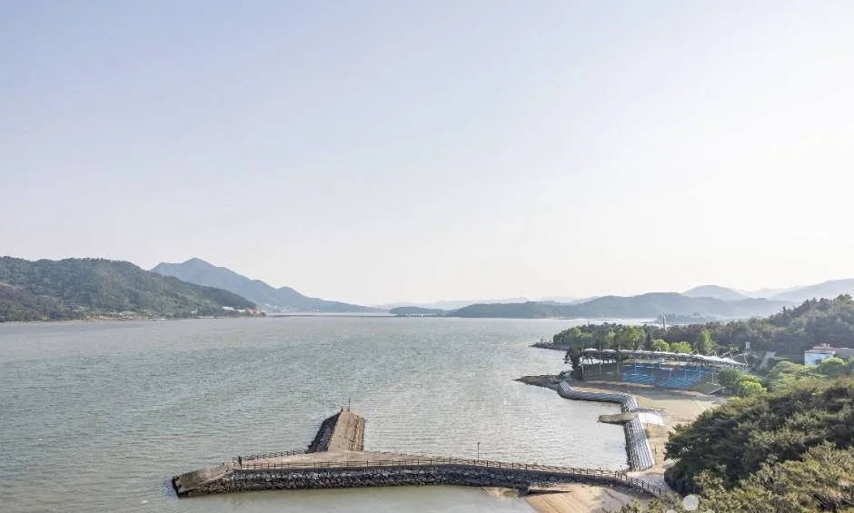
▲ 당항포 일대 바다. 촬영 시기는 자료에 없다. ⓒ 한국관광공사 · 공공누리 제1유형
3. 이순신 테마 구역 — 해전관·거북선 전시관·디오라마
한국관광공사가 소개한 이순신 구역 시설은 숭충사, 당항포 해전관, 거북선 전시관, 충무공 디오라마관이다. 전시 내용과 관람 소요 시간은 공식 자료에서 확인하지 못해 적지 않는다. 아래 사진은 한국관광공사가 올린 당항포관광지 사진 묶음에 포함된 장면이다.
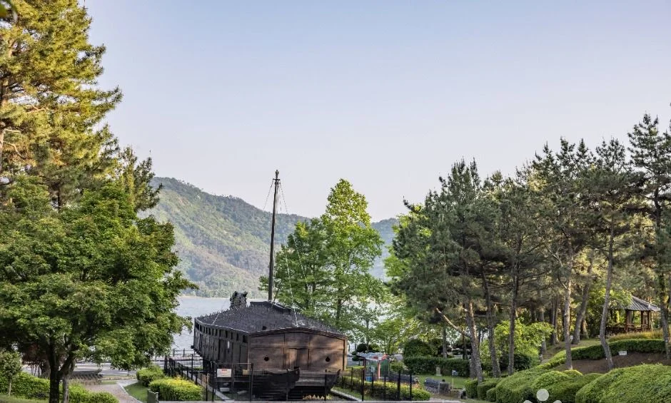
▲ 소나무 숲 사이에 선 거북선 형태의 전시 시설. 촬영 시기는 자료에 없다. ⓒ 한국관광공사 · 공공누리 제1유형
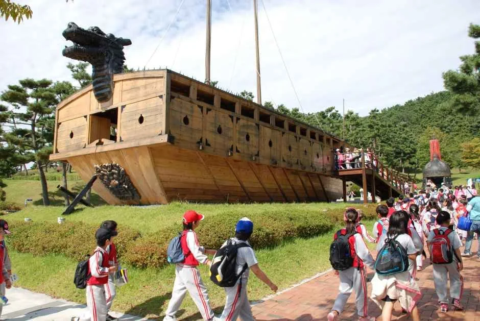
▲ 실물 크기로 보이는 거북선 모형과 단체 관람객. 촬영 시기는 자료에 없다. ⓒ 한국관광공사 · 공공누리 제3유형(변경금지)
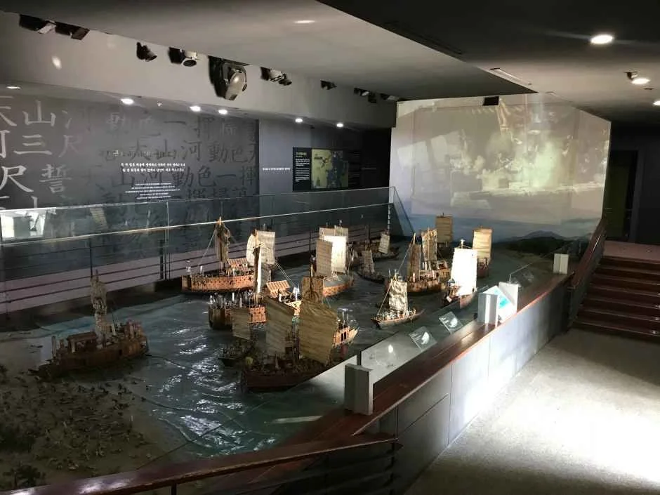
▲ 전시실 안에 함선 모형이 놓인 디오라마. 해전 전시관으로 보이나 사진 설명에는 시설명이 없다. ⓒ 한국관광공사 · 공공누리 제3유형(변경금지)
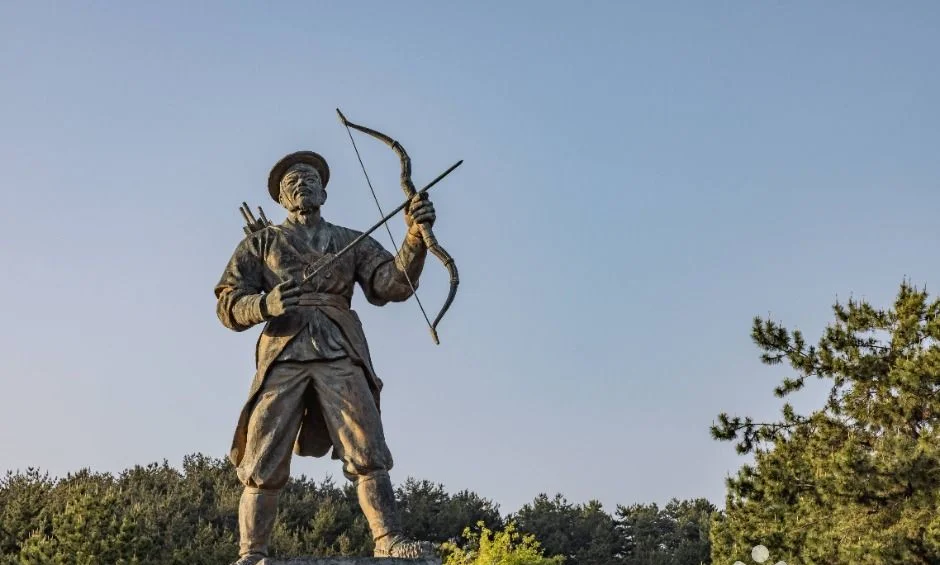
▲ 활을 든 무장 동상. 이순신 구역에 있는 동상으로 보이나 사진 설명에는 인물 표기가 없다. ⓒ 한국관광공사 · 공공누리 제1유형
4. 공룡 테마 구역과 공룡엑스포 — 지금(2026-10) 열리는 행사
공룡 구역에는 공룡동산·주제관·한반도공룡발자국화석관이 있고, 고성 자연사박물관·공룡나라 식물원·고성 수석 전시관도 관람 시설로 소개된다. 2026 경남고성공룡세계엑스포는 당항포관광지 일원에서 2026년 9월 22일 개막했고, 매체 보도상 41일간 열린다. 9월 22일부터 41일간이면 종료일은 11월 1일이고, 쿠키뉴스도 "9월 22일부터 11월 1일까지"로 보도했다(10월 31일로 적은 자료는 이 계산과 맞지 않는다). 다만 폐막일 운영시간은 공식 공지로 확인하는 편이 안전하다.
| 항목 | 내용 | 확인 수준 |
|---|---|---|
| 기간 | 2026-09-22 ~ 11-01, 41일간 | 쿠키뉴스 등 보도(2026-10-21 재확인) |
| 장소 | 당항포관광지 일원 | 쿠키뉴스 |
| 주차 | 행사 기간 주차장 무료 운영 | 쿠키뉴스·시대일보 보도 |
| 입장권(현장) | 대인(만 19~64세) 19,000원, 소인(36개월~18세) 13,000원. 사전예매(대인 16,000원·소인 8,000원)는 9월 21일 마감 | 엑스포 공식 페이지(고성문화관광재단)·쿠키뉴스 |
| 운영시간 | 평일(월~금) 09:00~18:00(발권·입장 09:00~17:00), 주말(토~일, 야간개장) 09:00~22:00(발권·입장 09:00~21:00) | 엑스포 공식 페이지(2026-10-21 확인) |
| 야간 프로그램 | 퍼레이드 매일, 불꽃놀이 토요일마다, 빛의 정원 야간 산책 예정으로 보도 | 시대일보, 편성 변동 가능 |
엑스포 기간에는 평소 입장료 표와 다른 행사용 입장권과 운영시간이 적용된다. 공식 페이지의 시간표는 평일과 주말로만 나뉘어 있어, 마지막 날인 11월 1일(일요일)에 별도 단축 운영이 있는지는 안내를 찾지 못했다. 36개월 미만 영유아 무료 등 감면 조건과 폐막일 운영은 고성문화관광재단(055-670-7400)에 문의하자.
엑스포 공식 페이지에서 관람요금과 시간표를 확인할 수 있다. 엑스포 공식 페이지 바로가기
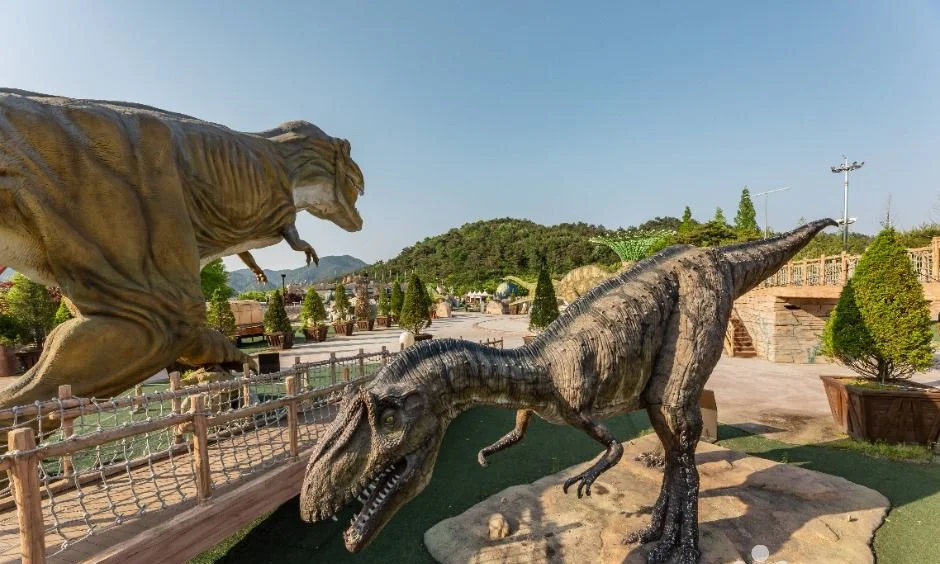
▲ 난간 너머의 육식공룡 모형. 공룡 테마 구역에서 볼 수 있다. ⓒ 한국관광공사 · 공공누리 제1유형
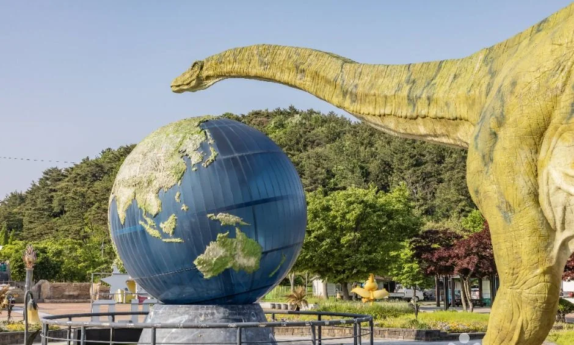
▲ 지구 모형과 초식공룡 조형물. 촬영 시기는 자료에 없다. ⓒ 한국관광공사 · 공공누리 제1유형
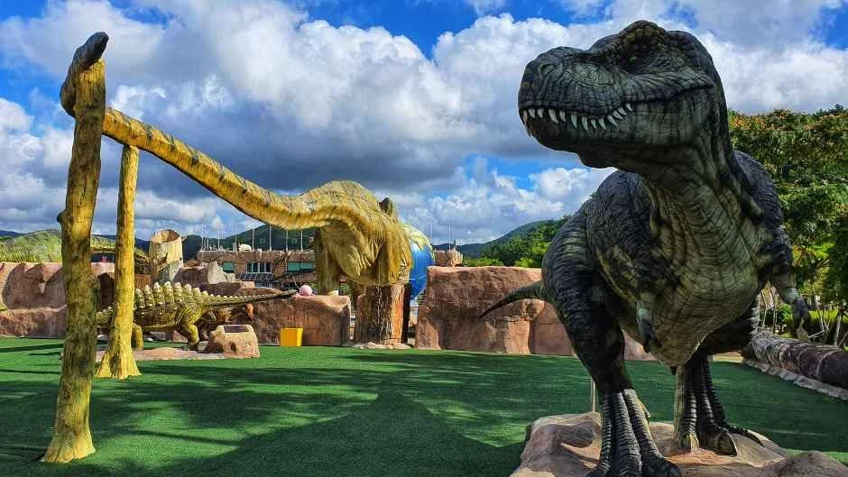
▲ 잔디밭의 공룡 조형물. 촬영 시기는 자료에 없다. ⓒ 한국관광공사 · 공공누리 제3유형(변경금지)
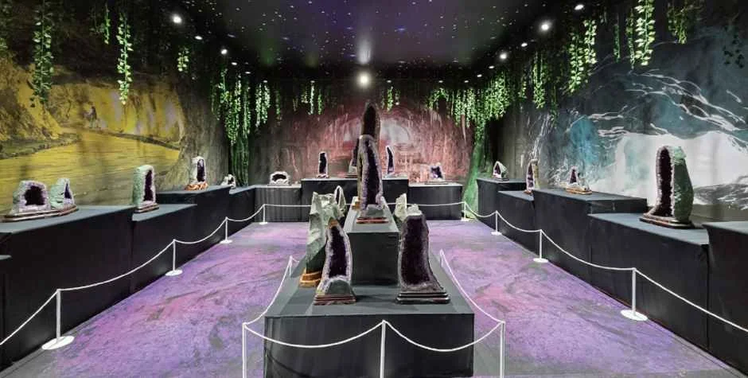
▲ 실내 공룡 전시관의 표본 전시. 시설명은 사진 설명에 없다. ⓒ 한국관광공사 · 공공누리 제3유형(변경금지)
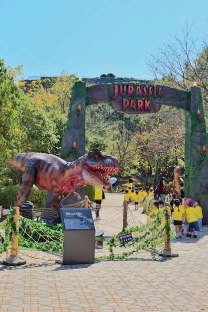
▲ 공룡 조형물과 간판이 서 있는 입구 풍경. 촬영 시기는 자료에 없다. ⓒ 한국관광공사 · 공공누리 제3유형(변경금지)
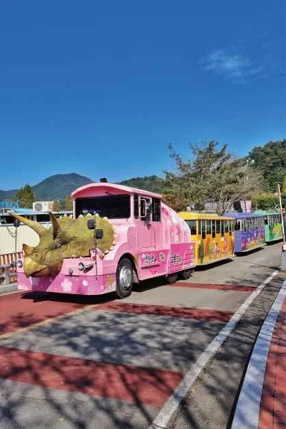
▲ 관내를 오가는 열차로 소개된 차량. 요금은 별도라는 안내가 있으나 금액은 확인하지 못했다. 촬영 시기는 자료에 없다. ⓒ 한국관광공사 · 공공누리 제3유형(변경금지)
5. 입장료·운영시간·주차 — 평소 기준(엑스포 외)
고성문화관광재단의 당항포관광지 운영 안내는 주간 개장을 화요일~일요일(월요일 휴무)로, 운영 시간을 09:00~18:00, 동절기(12~2월)는 09:00~17:00로 적고 있다. 매표·입장은 09:00~17:00이고 동절기는 09:00~16:00까지다. 한국관광공사 정보도 같은 시간대와 매주 월요일 휴무로 되어 있다. 다만 당항포 누리집 첫 화면에는 "09:00 ~ 18:00 (연중무휴)"라는 문구가 보이는 반면, 운영시간·요금 상세 페이지에는 "월요일 휴무"와 함께 연중무휴 표기가 없어 안내가 서로 어긋난다.
어느 쪽이 갱신이 늦은 것인지 공식 설명은 찾지 못했으며, 엑스포 등 행사 기간에는 휴무 없이 운영될 가능성도 있다. 월요일에 가려면 전화로 확인하는 것이 맞다. 당항포 운영시간·요금·주차료 안내 바로가기
| 구분 | 내용 | 비고 |
|---|---|---|
| 휴무 | 매주 월요일 | 홈페이지 첫 화면 "연중무휴" 표기와 상충, 확인 필요 |
| 운영시간 | 09:00~18:00(12~2월 09:00~17:00) | 매표·입장 마감은 각 1시간 전 |
| 어른 개인 입장료 | 보통권 7,000원(19~64세) / 우대권 3,500원(65세 이상, 증빙) | 단체 6,000원 |
| 청소년·군인 | 5,000원(13~18세) | 단체 4,000원 |
| 어린이 | 4,000원(3~12세) | 단체 3,000원, 3세 미만 무료 |
| 고성군민 | 1,000원(신분증 제시) | — |
| 관외 관광객 영수증 할인 | 군내 숙박·음식점 영수증 3만 원 이상 30%, 5만 원 이상 40% 할인(4인 이내) | 전날 또는 당일 영수증, 어른 4,900원/4,200원 |
| 주차료 | 승용차·15인승 이하 승합차 3,000원, 이륜차 1,000원, 16인승 이상 4,000원 | 엑스포 기간은 무료로 보도 |
| 문의 | 고성문화관광재단 055-670-7400 | 한국관광공사 정보 기준 |
무료 입장 대상(국가유공자·장애인 등)과 감면 세부 조건은 공식 안내 원문에서 따로 확인해야 한다. 당항포랜드(놀이시설)와 관내 열차는 입장권과 별도 요금이라는 안내가 있으나, 금액은 확인하지 못했다.
6. 겨울(12~2월) 운영 — 해가 짧아지니 폐장이 이르다
동절기에는 운영이 17:00에 끝나고 입장 마감은 16:00이다. 12월 이후 방문 계획이라면 오후 늦게 도착해서는 이순신 구역과 공룡 구역을 모두 볼 수 없다. 겨울 일출·일몰 시각과 관내 이동 시간은 공식 수치가 없어 적지 않는다.
| 상황 | 할 일 | 근거 |
|---|---|---|
| 12~2월 방문 | 입장 마감 16:00 전 도착, 운영 종료 17:00 | 고성문화관광재단 |
| 월요일 방문 | 휴무일이므로 055-670-7400에 사전 문의 | 운영 안내와 홈페이지 문구 상충 |
| 엑스포 기간(~11월 1일) | 행사 입장권·주차 무료 여부를 공식 공지로 확인 | 언론 보도 |
| 야외 이동 | 바닷가와 이어진 야외 관람이 많아 바람막이·방한복 준비 | 일반 안내 |
| 교통약자 | 전 구역 무장애 탐방로, 경사 구간 옥외 엘리베이터 | 한국관광공사 |
겨울에는 입장 마감(16:00)이 폐장(17:00)보다 한 시간 일러서, 표에서 가장 먼저 지킬 항목은 도착 시각이다.
▲ 바다 옆 산책로. 촬영 시기는 자료에 없다. ⓒ 한국관광공사 · 공공누리 제1유형
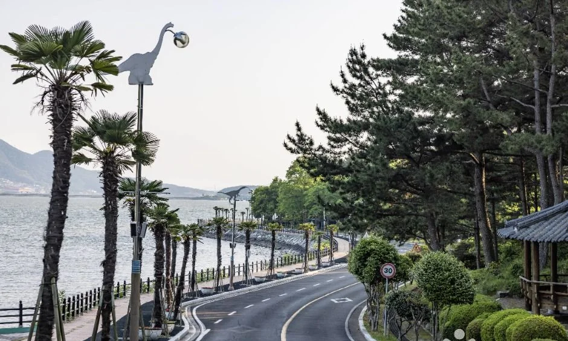
▲ 해안을 따라 이어진 도로 풍경. 촬영 시기는 자료에 없다. ⓒ 한국관광공사 · 공공누리 제1유형
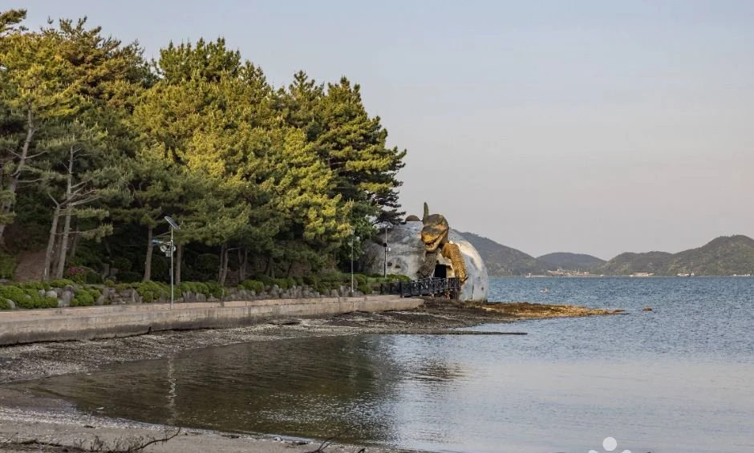
▲ 소나무 숲과 해안 너머로 공룡 조형물이 보이는 모습. 겨울·야간 사진은 공식 자료와 공공 저작물에서 찾지 못해 촬영 시기를 알 수 없는 사진으로 대신한다. ⓒ 한국관광공사 · 공공누리 제1유형
7. 상족암 공룡발자국과 이어 가기
상족암군립공원은 하이면 덕명5길에 있고, 당항포와 직선거리로 약 28km 떨어져 있다. 도로 거리와 소요 시간은 확인하지 못했다. 공룡을 주제로 하루에 두 곳을 묶는 경우가 많지만, 상족암 화석지는 물때에 따라 보이는 범위가 달라지는 곳이라 이 글에서는 자세히 다루지 않았다. 물때·관람법·박물관 휴관은 고성 상족암 공룡발자국 기사에 정리했다. 인근 지역으로 이어 가려면 통영·거제 드라이브·주차 가이드, 통영 욕지도 카페리·차량 승선 기사, 사천의 사천 바다케이블카 기사도 참고할 수 있다.
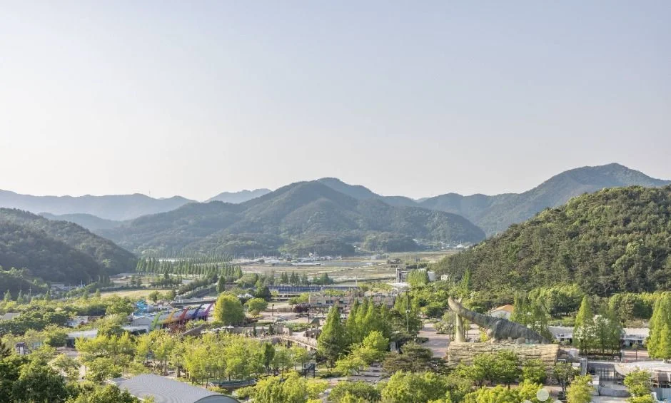
▲ 당항포 일대로 안내된 사진 속 풍경. 촬영 시기는 자료에 없다. ⓒ 한국관광공사 · 공공누리 제1유형
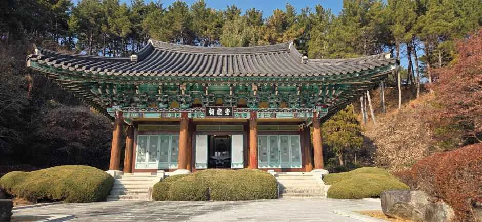
▲ 단풍 색이 보이는 이순신 구역 전각 건물. 촬영 연도는 자료에 없다. ⓒ 한국관광공사 · 공공누리 제3유형(변경금지)
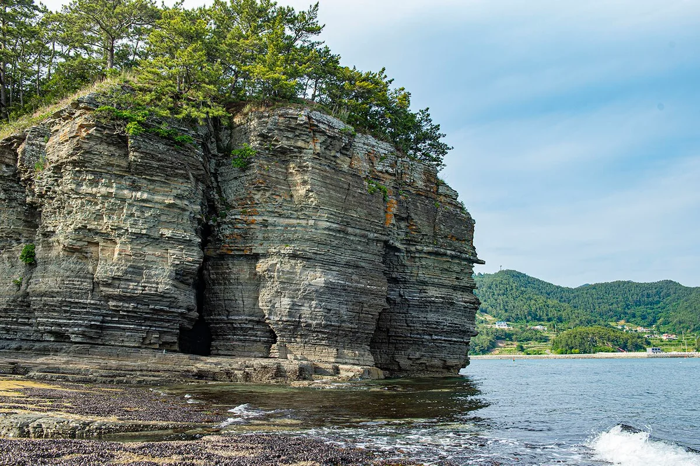
▲ 상족암 군립공원의 층리가 드러난 바닷가 절벽. 당항포 안이 아니라 하이면 상족암 일대 사진이다. 촬영 시기는 자료에 없다. ⓒ KMJ0521 · CC BY-SA 4.0 · Wikimedia Commons
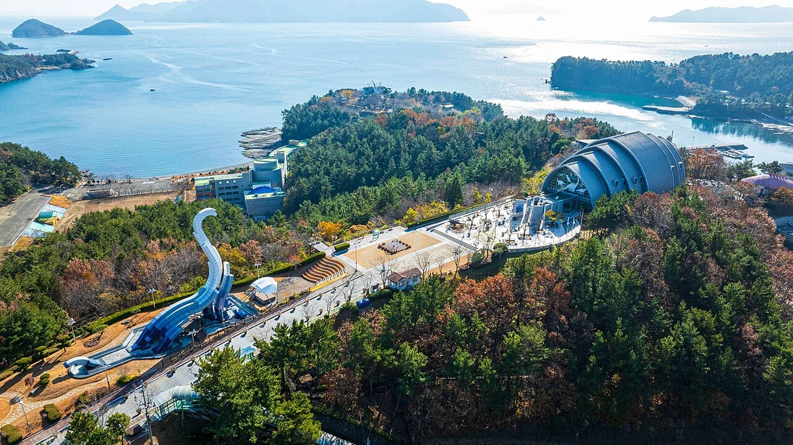
▲ 상족암 인근 고성공룡박물관을 위에서 본 모습. 붉게 물든 숲이 보인다. 당항포가 아니라 인근 시설이다. ⓒ 한국관광공사 · 공공누리 제1유형 · Wikimedia Commons
8. 반나절 코스로 짜면
아래는 공식 운영시간 기준 예시다. 구간별 이동 시간은 공식 수치가 없어 적지 않았다.
| 순서 | 할 일 | 체크 |
|---|---|---|
| 09:00 | 매표 후 이순신 구역(해전관·거북선·디오라마) 먼저 | 입장 마감은 17:00(12~2월 16:00) |
| 점심 | 관내 먹거리·카페 이용 | 영업시간 업소별 확인 |
| 오후 | 공룡 구역(공룡동산·화석관·식물원) | 엑스포 기간은 행사 구역 변경 가능 |
| 마무리 | 해안 산책로 걷기 | 월요일 휴무 확인 |
이 순서는 입장 마감 시각과 월요일 휴무를 기준으로 짠 예시여서, 엑스포 기간처럼 운영 조건이 다른 때는 체크 칸의 안내를 먼저 확인해야 한다.
▲ 빛 연출이 있는 실내 공간. 행사 전시로 보이나 프로그램명은 설명에 없다. ⓒ 한국관광공사 · 공공누리 제3유형(변경금지)
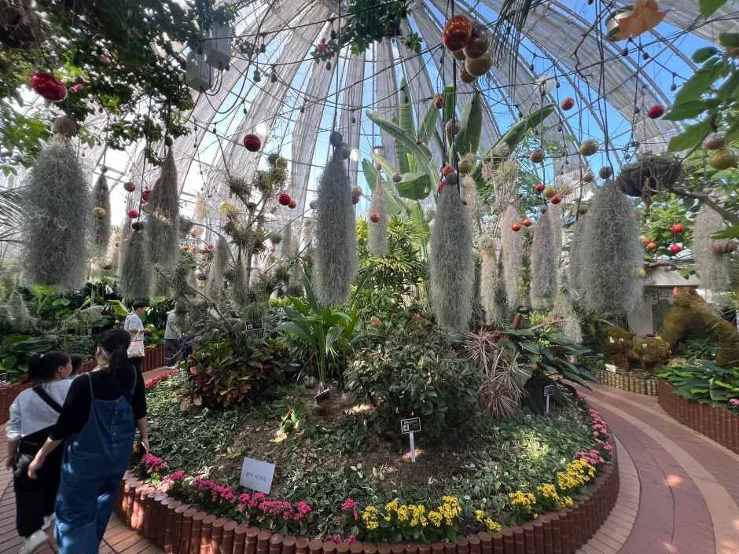
▲ 유리 돔 식물원 내부. 공룡나라 식물원으로 보이나 시설명은 설명에 없다. ⓒ 한국관광공사 · 공공누리 제3유형(변경금지)
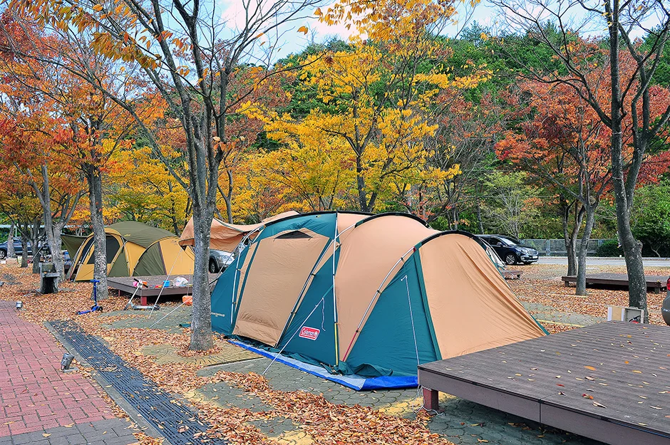
▲ 인근 당항포오토캠핑장 사진. 단풍 든 나무가 보인다. 이 야영장은 이 글의 운영시간·요금 정보와 별개다. ⓒ 한국관광공사 · 공공누리 제3유형(변경금지)
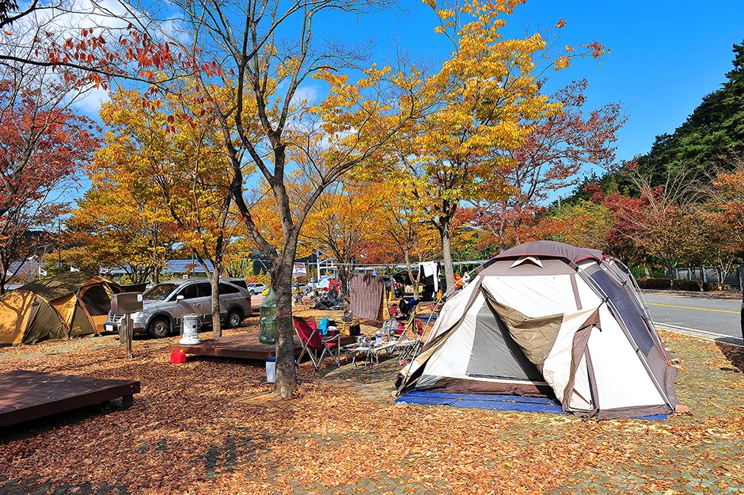
▲ 같은 야영장의 다른 구역. 사진 속 나무에 단풍이 들어 있다. 이 글의 운영시간·요금 정보와 별개다. ⓒ 한국관광공사 · 공공누리 제3유형(변경금지)
✅ 출발 전 체크
1) 경남 고성군 회화면(강원 고성 아님) 2) 월요일 휴무·09:00~18:00, 12~2월 17:00 폐장(홈페이지 "연중무휴" 문구와 상충, 전화 확인) 3) 어른 7,000원·승용차 3,000원은 평소 기준, 공룡엑스포 기간은 별도 공지 확인 4) 사진은 촬영 시기가 자료에 없다.
9. 정리
경남 고성 당항포관광지는 이순신 승전지와 공룡 전시가 함께 있는 곳이고, 평소에는 월요일 휴무, 어른 입장료 7,000원, 승용차 주차 3,000원, 12~2월은 17시에 문을 닫는다. 상족암 화석지는 별개의 장소다.
해전관 등 시설별 관람시간, 폐막일(11월 1일) 별도 운영시간, 당항포랜드·열차 요금은 확인하지 못했다. 이 기사는 2026년 10월 21일 기준이므로 방문 전 고성문화관광재단(055-670-7400)에 확인하자.